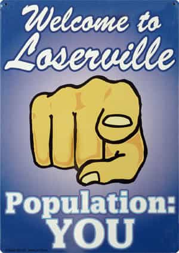

< < < Back
The Most Disgusting Thing A Slut Can Say – Return Of Kings
Women love winners, and women love losers—it’s the guys in the middle they can’t fucking stand. This is something I figured out back in high school. The popular guys never went without pussy, and the drug dealers never went without it either. High school doesn’t last forever, but the fact remains that just being a normal dude doesn’t get you very far with chicks.
I have no doubts that a frustrated 23-year-old virgin with a passion for working out, a serviceable degree, and a very bright future ahead of him is reading this article right now. At the same time, there’s a jobless derelict out there somewhere that’s deciding on which of the three attractive women he nails on a regular basis will be the one he visits tonight. It ain’t right, but it is the way the world works.
I won’t blow smoke up the asses of the ROK readership—I’ve never had hardships with getting women. There are no stories of overcoming adversity that I can share about my inability to land some pussy. Getting women has never been a problem for me and it has only gotten easier with time. The reason I’ve never gone without women is simple—I combine being a loser and being a winner into one package.
Being A Winner
In my professional life, I’m a winner. I have a strong passion for what I do and I’m good at it. I’m always expanding and brushing up on my knowledge. I take my responsibilities seriously. I show up for work looking professional because I am a professional. The shoes are shined, the coat is dry-cleaned, the slacks have perfect creases and the face is clean-shaven. I have the respect of my colleagues—I don’t want anyone I fly with to ever get the impression that I don’t know my shit or that I can’t be relied on in a pinch. That would be unacceptable, and I will never allow it to happen. In the cockpit, I will never be a loser.
When it comes to my health, I’m a winner. I eat as clean as I possibly can, which is not easy for a guy who spends a lot of time away from home. Even though it is a challenge, I do the best I can. I also lift three times a week and run for cardio. My health is directly tied with my professional life due to an annual medical examination required for professional pilots. If I lose my health, I lose my ability to fly and make money. Only a loser doesn’t care about their health and well-being.
With my immediate family and the very tiny group of people I care about, I’m a winner. If someone close to me needs anything at all—I’m there for them with no questions asked. If they’re broken down on the side of the road at 2:00 AM, I’ll be there with flashlights, a bag of tools, and a thermos full of hot coffee. If my parents get too old to take care of themselves, I will do it for them. I would wipe my dad’s ass and feed him like a baby if it ever came down to it. And I would do it without complaining or feeling the slightest tinge of embarrassment. That’s one of the luxuries of being a great and selfless father—the unwavering loyalty of his sons. He will never set foot in a nursing home so long as I outlive him. Same for my mother.
When dealing with people in general, I’m a winner. I’m never deliberately a dick to anyone that doesn’t deserve it. I’m polite to waitstaff, retail workers, and anyone I come in contact with in public. I see no reason to ruin someone’s day or be a power-tripping asshole to people for no reason. I tip well for good service, and give compliments to people that go above and beyond to please me. Only when necessary, will I become a ruthless cut-throat son of a bitch.
When it comes to making money and making sound financial decisions, I wasn’t always a winner, but I can say with confidence that I am now. My savings is growing quite nicely every month, and I’ve cut off any impetuous and needless spending. Winners are able to retire and stop working at a decent age. I aim to be included in that group someday.
Being A Loser
On the other hand, with the women I date, I’m a complete fucking loser. I don’t respect them. I don’t care about their opinions, their hopes, or their dreams. I run my dating life in the same way I would run a business, and like any good business, I have a slogan: “When women have problems, I don’t have solutions.” Women nowadays don’t deserve a winner, therefore, they don’t get one. Even if they did get one, they wouldn’t appreciate it. Women are only entitled to the loser version of me. And you know what? They wouldn’t have it any other way.
Why am I such a loser to women? Well, there are two reasons. Number one: it’s easy and it works—being a winner is hard, being a loser isn’t. Number two consists of a comprehensive list of very rudimentary attributes a woman must possess in order to not be considered a loser herself.
If she’s slept more than three dudes by 25 years old—she’s a fucking loser. If she has a tattoo anywhere on her body or anything other than normal earrings—she’s a fucking loser. If she’s had a one night stand; fucking loser. If she’s a social media attention whore; insecure fucking loser. Women have made the decision that their utility will not extend beyond their vaginas. If that’s the way they want to run things, then by all means—go for it. I’m more than happy to play along and take my share—provided it comes at little hassle.

Those Disgusting Words
Now, you might get the impression that my lowly opinion of the modern woman would make them hate me. Obviously, some of these thoughts and opinions must be kept hidden away, but I’m pretty overt in my feelings towards women. It’s not displayed through contempt, but through apathy. There’s just not a whole lot of fuck giving going on over here. However, none of this has stopped a few of these women from saying the most foul, disgusting, vomit-inducing shit they could ever utter to a man…
“I love you.”
Hearing a slut say that she loves me will completely ruin my day. I would rather watch two gay snapping turtles slowly fuck in a puddle of diarrhea than have some slutty broad say that she loves me. Hearing that will make me feel like I messed up somewhere along the line, or did something wrong. I will say to myself, “Dammit, I knew I should’ve been nicer to this one.”
It really is mind-blowing. There are so many dudes out there who would dedicate their lives to making these women truly happy. Men that would move heaven and earth to have some slut fall in love with them. Men that would pull 80-hour workweeks to make money to buy these sluts whatever they want. Men that would forgive any of their prior transgressions and piss-poor decisions. These men would truly love these women with all of their little beta hearts.
Yet here these women are… in love with some dude that would seriously debate whether he would miss a day at work to go to their funerals if they died. And this seems to have no effect on them at all. They want exclusive relationships anyway. They start pursuing commitment like they’re fucking Oliver Twist asking for a second helping of porridge, “Please sir, I want some more.” Nope, sorry bitch—the kitchen’s closed.
Committing to these women is simply an impossibility, and it’s impossible because they command absolutely no respect. If you show me a truly respectable woman, I’ll show you a man that would go to bat for her in a heartbeat. Otherwise, assume the position: face down, ass up.
Here’s an example of what I’m talking about. I was seeing a woman earlier this year. At one point, I had her eating out of the palm of my hand and she used to come over to my place to do chores for me. One day she was doing my laundry and said, “Just so you know, I’ve never liked a guy enough to do his laundry for him,” I thought that was amusing and I completely believed her—she couldn’t fold a t-shirt to save her life, and her clothes were usually in a pile on the floor at her place, so I had proof. I’m sure some guys out there would love to hear those words come from a woman’s mouth. “Oh gee golly, she likes me and thinks I’m special and oh-so great,” he might say to himself. Faggot.
I wasn’t buying the shit she was selling, though. Why, you may ask? Because earlier in our relationship she had said to me, “I’ve never done anal before, all of my other boyfriends wanted to try it and I wouldn’t do it. But I’ll do it for you,” I didn’t believe her for a fucking second. This was a slut in the truest sense of the word—a standard issue college educated hoe that had smoked more sausages than all the barbecue joints in Memphis combined. Given the way she could suck and ride a dick, I knew she wasn’t being honest.
Now, just think about that for a second. In 2014, the chances a woman was previously fucked in her asshole by an ex-boyfriend are greater than the chances that she washed and folded his jeans and t-shirts. That is some shameful shit right there. Oh American women, how far you have come.
In Closing
Being a loser is no way to approach life. In order to make life worth living a man must have goals, aspirations, and meaningful hobbies. Those goals, aspirations, and hobbies cannot revolve around relationships with women. Women are not to be taken seriously—they are a supplement to your otherwise fruitful existence.
Sure, there are a handful of them out there that are worth your time, but finding one is going to be one hell of a challenge. I haven’t met a relationship-material woman in America in the past six years of trying, and trust me, I’ve tried. It used to be frustrating, but now it’s just comical. I’ve resigned myself to the fact that this is just the way shit goes.
Gentlemen, once you legitimately stop giving a fuck about women, they will cling on to you like human barnacles. That’s the honest truth. I was in love once, and I wasted five years of my life. Relationships have one of two outcomes: you’re either together forever, or your not. There is no return on investment with broken relationships. The only thing you get are some hard lessons learned and a fresh start—that’s it.
I went all in with my emotional chips on a woman that was the equivalent to a pair of Jacks—I lost my hand. I will never go all in again unless I’m holding a Royal Flush. If that happens? Great. If it doesn’t? Also great. Life is good and there’s a lot of fun and meaningful shit to get done before one dies—a steady relationship isn’t a requirement for making any of that happen.
Just remember to use sluts for their designed purpose, while keeping your eyes peeled for one of the good ones. That’s the best advice I can offer. After a five-minute conversation with a modern woman, it should be crystal clear that you won’t be with her for the rest of your life. Act accordingly. Get yours and get out when you’re ready to move on. Other than her pussy, she’s irrelevant unless she proves otherwise. Never forget that.
Give a woman heaven, and she’ll complain about the view. Give a woman hell, and she’ll offer to pay the rent. – Yours Truly
Read More: 26 More Signs She’s A Slut


{kind=link}
{kind=link}
{kind=link}
{kind=link}